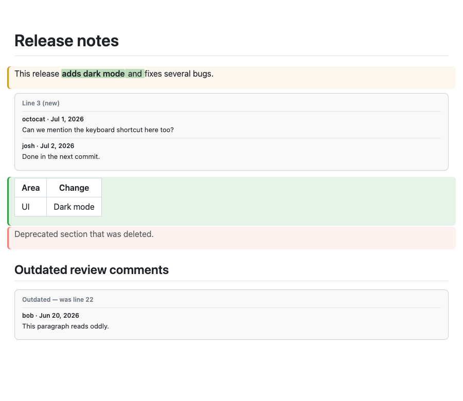
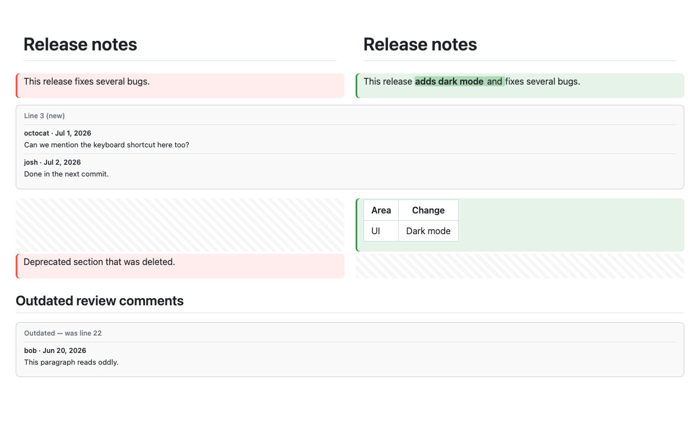
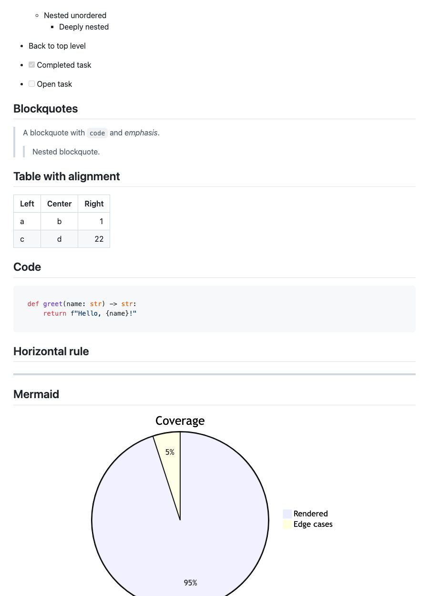

A native macOS app for people who think in rendered Markdown — for reading docs locally, and for reviewing documentation-heavy pull requests.
Signed & notarized · macOS 13+ · free and open source · direct download
More and more of what flows through pull requests isn't code — it's
documents: design docs, decision records, agent and skill definitions, runbooks,
READMEs. Reviewing prose as a wall of +/− source lines is the wrong
altitude. PullMark shows Markdown changes the way readers will see them — formatted, with just
the changed words highlighted — and lets you comment, suggest, and submit your review right
there.
It's deliberately not a full review client. PullMark shows the Markdown files in a PR; your usual tools remain the right place for the code. Think of it as the reading room next to the workshop.

Word-level rendered diffs, with review threads under the blocks they discuss.

Or side by side, if that's how you read.
Tables, task lists, footnotes, alerts, syntax-highlighted code, Mermaid diagrams — verified construct-by-construct in CI. Local files re-render as you save, with relative images and links that work, an outline sidebar that follows your scroll, and ⌘F find-in-page.

Comment on rendered blocks, insert one-click-applicable suggestions, reply to and resolve threads, submit or save pending reviews.
Open PRs are watched for updates; statuses (draft, open, merged, closed) live in the sidebar and recents.
Compare any file against a previous commit or branch — same rendered word-level diff, straight from git.
Quick Look previews in Finder, default-app support for .md, a pullmark CLI, and your existing gh/git credentials.